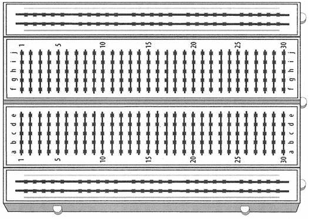

Lab 9 : RC in DC and AC Circuits
Seneca College SES250 Electromagnatics
Objectives
- To observe the charging and discharging of a capacitor in an RC circuit
- To learn how to measure the frequency and the period of a periodic signal using an oscilloscope
- To observe the phase shift of an RC circuit in AC
Purpose
- Generate an impulse signal to an RC circuit
- Measure the rise time (or time constant) of an RC circuit using a Digital Storage Oscilloscope (DSO)
- Measure the phase shift of an RC circuit using a DSO
Description
Capacitor
Similar to resistors, capacitors use special markings to indicate their values. Since the amount of area for markings on a capacitor is limited, there are also a set of rules for specifying the capacitance value of a capacitor. Manufacturers often use two separate lines for their capacitor markings and these have the following meanings: - First line: capacitance (in pF or μF) [and tolerance (J=5%, K=10%, M=20%)] - Second line: rated DC voltage [and code for the dielectric material]
For a ceramic capacitor, often only a three-digit code is given. The first two digits correspond to the first two digits of the value whilst the third digit is a multiplier which gives the number of zeros to be added to give the value in pF. For example, 104 means 10 x 104 pF = 100nF.
Furthermore, some capacitors such as electrolytic capacitors are marked with symbols (“+” and “-”) to indicate the correct polarity - failure to observe these markings when connecting a capacitor to a circuit can be catastrophic!

Figure 9.1 Various Capacitor Markings
Source: Capacitor Markings
RC Circuit
A resistor-capacitor circuit (RC circuit), RC filter or RC network, is an electric circuit composed of resistors and capacitors. It may be driven by a voltage or current source and these will produce different responses. A first-order RC circuit is composed of one resistor and one capacitor and is the simplest type of RC circuit.

Figure 9.2 Series RC circuit
A series RC circuit with a capacitor that is initially charged to and then allowed to discharge through a resistor will exhibit the following relationship for the voltage across the capacitor over some time:
where is the capacitor voltage at
The time required for the voltage to fall to or about 37% or 1/3 of is called the RC time constant and is given by:
where is measured in seconds, in ohms and in farads.
The chart below shows a typical curve of the voltage across the capacitor during discharge in an RC circuit.

Figure 9.3 Voltage curve of a capacitor during discharge in an RC circuit
Source: Wikipedia: RC Circuit
Alternating Current
Alternating current (AC) is an electric current which periodically reverses direction and changes its magnitude continuously with time, in contrast to direct current (DC), which flows only in one direction.
The usual waveform of alternating current in most electric power circuits is a sine wave, whose positive half-period corresponds with the positive direction of the current and vice versa (the full period is called a cycle). In certain applications, different waveforms are used, such as triangular waves or square waves.

Figure 9.4 Various AC Waveforms. From Left to Right and Top to Bottom: Sine, Square, Sawtooth or Ramp, Triangular
Source: Wikipedia: Alternating current
Source: Circuit Digest: AC Circuit Theory (Part 2)
A Capacitive Circuit that consists of R and C in series exhibits a timing difference between the peak amplitude of the current and voltage. This timing difference is called Phase Shift. As the Capacitor opposes a change in Voltage and stores energy from the Power Supply in the form of an Electric Field, the Capacitor Voltage vC lags the Capacitor Current iC by 90° and lags the Power Supply Voltage v by a Phase Angle Φ.
This phase shift between voltage and current can be calculated by:
where is AC frequency in Hz, in ohms and in farads.

Figure 9.5 V-I Relationship of the Circuits RC
Source: CMM: Phase Shift
Materials
- Resistors: 10kΩ or similar value resistor
- Capacitors: 10nF or similar value capacitor
- Breadboard
- Jumper wires
Preparation
Lab Preparation Question:
Using a resistor value of 10kΩ and a capacitor value of 10nF, find the RC time constant.
Sketch the breadboard below onto your notebook then draw how the components will be connected to the breadboard according to the circuit shown in Figures 9.6 and 9.7. Clearly show which tie point will the wire, resistor, capacitor, function generator and oscilloscope channel(s) be attached to.

Using a resistor value of 10kΩ and a capacitor value of 10nF, find the theoretical phase shift between voltage and current for an RC circuit in a 1kHz AC signal. Repeat the calculation for a 500Hz AC signal.
Copy the observation tables found in this lab into your notebook.
Procedures
Part 1 : RC Circuit in DC
To observe the transient response of an RC circuit, the circuit will be driven with a periodic square wave to simulate the opening and closing of a switch. The period of the square wave should be much longer than the time constant, , of the circuit to allow the circuit to reach a steady state.
-
Acquire a 10kΩ or similar value resistor, a 10nF or similar value capacitor, a breadboard, and some jumper wires.
Lab Question 1: Measure the resistance and capacitance of the resistor and capacitor respectively and write down the values in Table 1.
Lab Question 2: Calculate the time constant of the RC circuit and write down the values in Table 1. The time constant should be around 0.1ms.
Table 1:
Measured Resistance Measured Capacitance Calculated Measured -
Assemble the circuit shown below then measure the current through the load resistor.
REMEMBER: Refer to Lab 4 for circuit component symbols.

Figure 9.6
-
Set the function generator to a 1kHz (or 500Hz if the capacitor doesn't fully discharge) square wave and 3Vpp as the amplitude with no offset.
REMEMBER: The output should be set to High-Z.
-
Check your circuit to ensure there is no short circuit then turn on the function generator.
- A RC response curve should show up on the DSO. Adjust the time and voltage division (using the adjustment knobs) as well as the position of the signal so one discharge period (similar to Figure 9.3 above) can be seen on the DSO.
-
Use the measurement tool, cursor on the oscilloscope, or the division lines, to estimate the time it takes for the voltage across the capacitor to drop ~63%.
Lab Question 3: Does it agree with the time constant you calculated earlier?
Lab Question 4: (During-Lab) Demostrate to the lab professor or instructor your RC response observation on the display of the oscilloscope.
-
Keep the RC circuit intact for Part 2 of this lab.
Part 2 : RC Circuit in AC
The next part of this lab is to observe the AC response of an RC Circuit and the relationship between the voltage and the current using an oscilloscope. Since we cannot measure directly using an oscilloscope, we'll be measuring the voltage of the resistor since the current and voltage is always in phase at the resistor.
-
Using a 10kΩ or similar value resistor and 10nF or similar capacitor, assemble the circuit shown below if it's not assembled already.

Figure 9.7
-
Ensure that the function generator’s output is off then set the output of the function generator to high Z (Channel > Load Z > High Z).
- This time, set the output waveform to be a sine wave then set the output amplitude to 6 Vpp and the frequency to 1.00 kHz. Leave offset voltage and phase at 0.
-
Turn on the oscilloscope then connect CH1 and CH2 to the circuit per the circuit diagram.
NOTE: The ground (black cable) for both CH1 and CH2 is connected to the negative (black) node of the function generator.
-
Turn on the function generator output and observe the relationship between CH1 and CH2. Adjust the voltage and time division as necessary.
-
From the two signals that you see, find a peak from CH1 (measuring ) and the closest peak from CH2 (measuring ).
Lab Question 5: Which signal is leading? Does it agree with the observation you expect from an RC circuit?
Lab Question 6: Find the time difference between the two signals. You may use the horizontal position knob to move one of the signals to the centre for easier measurement. Afterward, convert this time difference you found to the phase angle difference by using the formula below. Does it agree with the phase angle difference you calculated in your pre-lab? Write your result in Table 2.
NOTE: The time difference might be in ms and the phase angle difference might be in RAD depending on your setting.
Table 2:
Measured Resistance Measured Capacitance Measured Time Diff Measured Phase Shift 1 kHz 500 Hz -
Replace Steps 5 to 9 for a frequency of 500 Hz.
Once you've completed all the above steps, ask the lab professor or instructor over and demostrate you've completed the lab and written down all your observation. You might be asked to explain some of the concepts you've learned in this lab.
Post-Lab
- Using the skills and knowledge acquired from this lab, answer the post-lab question(s) on blackboard. Due one week after the lab.